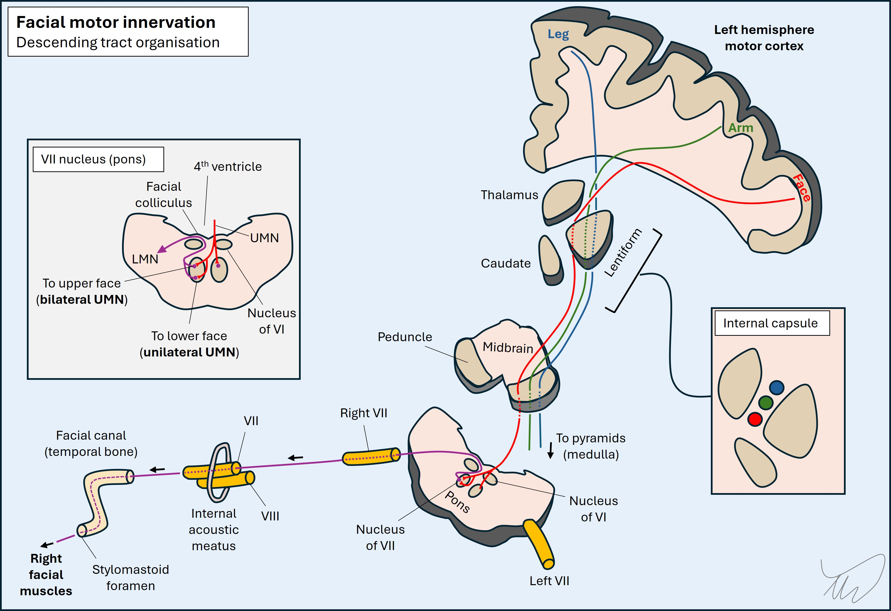
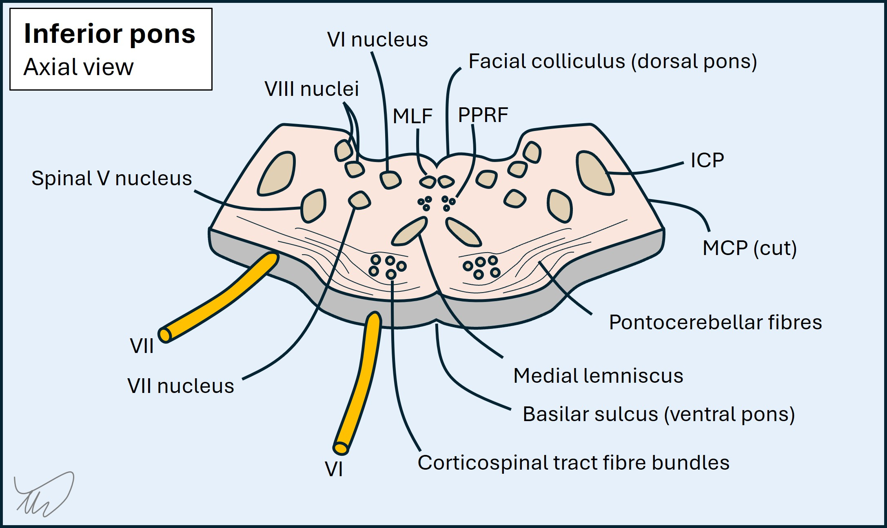
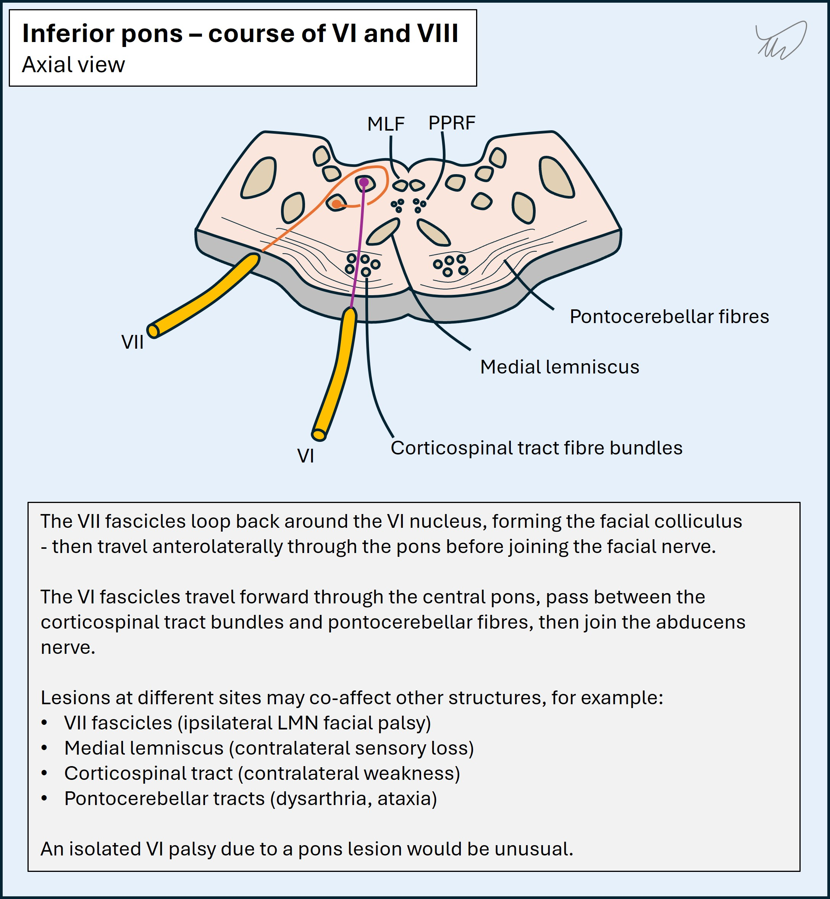
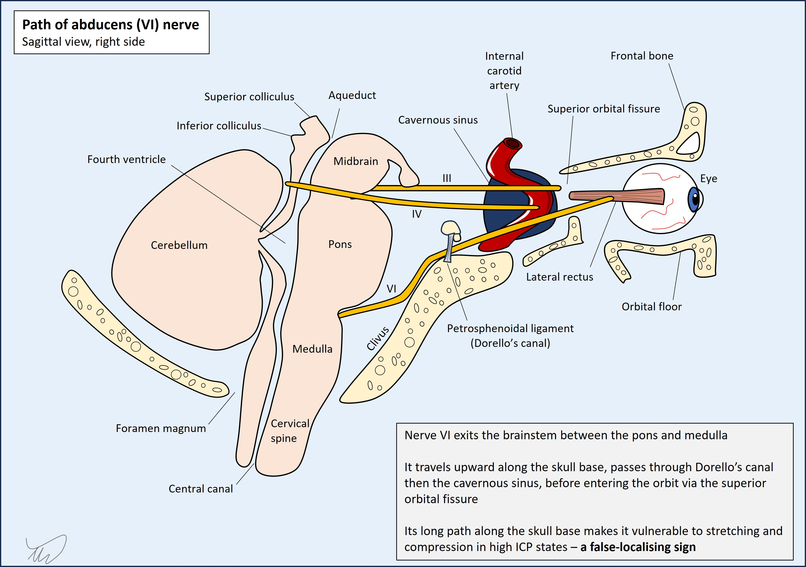

Case 23 - Weakness and abnormal eye movements
Where is the lesion?
This is a neurological emergency. The patient's day started normally, then she developed sudden-onset left hemiplegia with dysarthria and right sixth nerve palsy, then rapidly developed coma. Her Glasgow coma scale (GCS) is now 3 - she does not move, vocalise or open her eyes to any stimulus.
We are looking for a lesion site that would explain all of this. We can start with the initial features.
Left hemiplegia including the face involves the motor tracts anywhere between their right hemispheric cortical origins and the right side of the pons, but no lower. At this level the corticopontine UMN fibres involved in facial movement then supply both facial nuclei in the dorsal pontine tegmentum - some cross, supplying upper and lower portions of the contralateral (left) face - but some remain on the same side to supply the upper right facial muscles too. Hence, unilateral lesions proximal to the nucleus spare the forehead - the UMN pattern of facial weakness, as in this patient.

Hence, this pattern of face-arm-leg weakness doesn't localise easily on its own - other than that we know it's no lower in the body than the red corticobulbar neuron in the picture above. Can the sixth nerve help?
Sixth nerve (VI) palsy can arise anywhere between the abducens nucleus in the dorsal caudal pontine tegmentum and the nerve's final destination in the orbit, where it innervates the lateral rectus - so there are both pontine and peripheral sites that can be affected by lesions.
To make sense of this case we should review the path of VI - from the nucleus to its end-target, the lateral rectus muscle.
From pons to lateral rectus: the path of nerve VI Brainstem - nucleus and fasciclesThe nucleus of VI is in the inferior pons, situated in the dorsal tegmentum. The fascicles project from the nucleus, but the fibres which run through the medial longitudinal fasciculus (MLF) also do - linking it to the oculomotor (III) nucleus in the midbrain above, allowing conjugate horizontal gaze to the same side as the VI nucleus. As a result, nuclear lesions tend to produce conjugate gaze paralysis, not just a unilateral VI palsy.

After the nucleus, the fascicles of VI travel anteriorly through the pons. Their path is fairly central, not far off the midline, and they pass through the ventral pons (i.e. the base, or basis ponti). The pons is a 'busy neighbourhood' - so there are numerous structures which the fascicles of VI travel next to.
In the dorsal pons they include the fascicles of VII (which loop around the nucleus of VI, forming the facial colliculus), the paramedian pontine reticular formation (PPRF, involved in conjugate gaze) and the MLF.
Then as the fascicles travel forward they run near the medial lemniscus (ascending sensory pathway) in the central pons.
Further forward they pass amongst the descending corticospinal fibres. At this level these are not one single tract but multiple individual fibres all separated, looking like small dots on axial cross-section. The fibres are wrapped in the transverse pontocerebellar fibres, massive structures that form the bulk of the pontine base - seen from the front they give it a thick, round appearance. They externally wrap the corticospinal fibres but also run between them, separating them into bands. The fascicles of VI pass through these transverse fibres before they then exit the pons.

It's worth remembering that the ventral pons also houses the descending corticobulbar fibres - the UMNs for facial muscles, which then travel to the bilateral facial nuclei (as described above). It's possible to see an ipsilateral VI palsy with contralateral UMN pattern facial weakness - often with contralateral limb weakness and sensory loss. This is an example of alternating hemiplegia and is termed Raymond syndrome.
Intracranial pathway - prepontine cistern, skull base and Dorello's canalThe fascicles enter the nerve, which exits the pontine base at the pontomedullary junction, entering the subarachnoid space filled with CSF - the prepontine cistern.
VI travels anteriorly and takes a sharp upward angle - its target is the orbit, along with IV and III, but they emerge from the midbrain, whereas VI has to make an uphill journey along the skull base. It runs upwards along the clivus, a sloped bony structure, travelling just above the dural layer that lines the clivus.
This feature is important - VI is vulnerable to anything that increases intracranial pressure (ICP) - which can exert downward force on VI and squash it against the skull base. VI palsy is common in high ICP states, but is a false-localising sign - meaning that there may be a lesion somewhere else leading to ICP, for example a tumour in the contralateral hemisphere. High ICP sometimes even features bilateral VI palsy.

VI then travels along the base of the skull over the sphenoid bone. It passes through a small space above the sphenoid called Dorello's canal, under a ligament (petrosphenoidal) which lies above it like a strap. Cavernous sinus, superior orbital fissure and orbitVI leaves the CSF space by piercing the dura at the posterior wall of the cavernous sinus. Here it travels with III, IV, V1, V2 and the sympathetic nerve supply to the pupil and eyelid. The other cranial nerves here are within the lateral wall, whereas VI passes freely within the sinus, while the sympathetic runs in the carotid plexus surrounding the internal carotid. The sympathetic leaves the carotid and joins VI.
All of these pass through the superior orbital fissure (SOF) to enter the orbit, except V2 which exits through the foramen rotundum.
Within the orbit VI makes a direct course to the lateral rectus muscle, its target.
VI travels next to multiple different structures along its path. The result is that pathology in many of these areas produces 'VI palsy plus' - i.e. there are other features due to collateral damage affecting other structures. This helps with localisation.
In the pons these might include the following, moving from dorsal to ventral pons:
Along the skull base at the clivus, XII may be affected - this combination is termed Gotfredsen's syndrome, or clivus syndrome, usually due to tumours.
In the cavernous sinus VI may be affected along with some or all of III, IV, V1, V2, and the sympathetic nerves. Various combinations can arise. VI plus Horner's is called Parkinson's sign.
Similarly multiple cranial nerve palsies can be seen due to superior orbital fissure (SOF) lesions - i.e. SOF syndrome (III, IV, V1 and VI). Orbital apex syndrome features the same nerves but also II - so visual loss is an important feature to look for in order to identify this.
She has right VI palsy with left UMN VII palsy and hemiplegia. This fits a right pontine lesion which is relatively anteriorly sited - causing Raymond syndrome.
Of course, we shouldn't forget the other possibility - that this is a false-localising VI palsy due to high ICP. She may have hemiplegia and facial weakness from another lesion site and a process leading to high ICP, squashing the nerve on the skull base.
One other clue supports this being a pons lesion - the dysarthria is severe. Dysarthria is a common feature in strokes which affect the UMN corticobulbar fibres, but speech is usually still intelligible. Pontine lesions however can produce severe dysarthria, more extreme than with lesions higher up - sometimes reducing speech to an almost unintelligble 'growl' (anarthria). This is probably due to a combination of corticobulbar and pontocerebellar fibres being damaged.
The fact the patient rapidly lost consciousness doesn't tell us this is due to a pons lesion or another lesion elsewhere, as there are multiple causes of unconsciousness. However, it's certainly compatible with the pons.
There are projections from the pons that are involved in consciousness - the reticular activating system (RAS). They project from the reticular formation in the upper brainstem (pons and midbrain) towards the thalamus. Lesions can cause coma
The RAS fibres are in the upper (rostral) pons, whereas the VI palsy suggests inferior (caudal) pons. It could be that this lesion started in the inferior pons and then rapidly expanded upwards, damaging the RAS fibres - causing the patient to lose consciousness in the department.
Of course, this may be something else - a lesion leading to rapidly-rising ICP (with a VI palsy) and perhaps brain herniation leading to coma.
If this is all due to one lesion, it's best explained by a right inferior ventral pontine lesion that expanded upwards and caused coma.
If not, there may be a lesion somewhere in the right brain or upper brainstem that caused raised ICP, leading to a VI palsy as a false-localising sign and then coma.
What is the lesion?